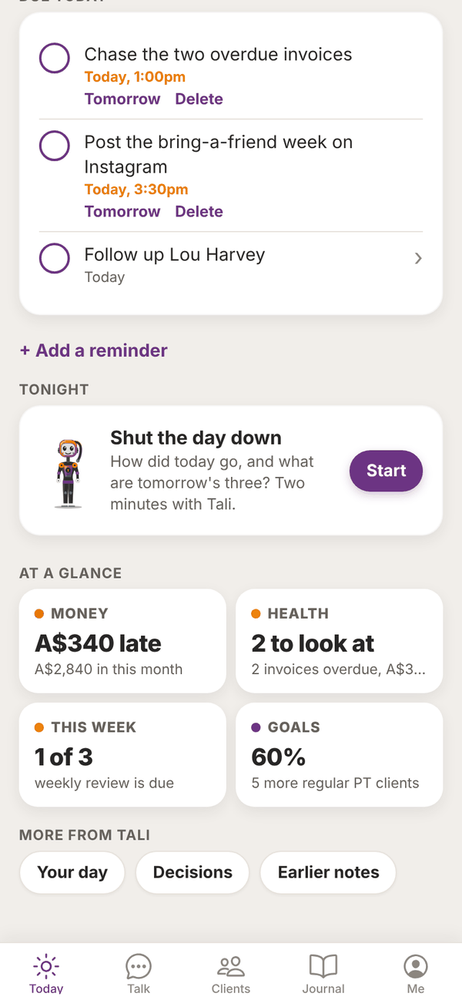
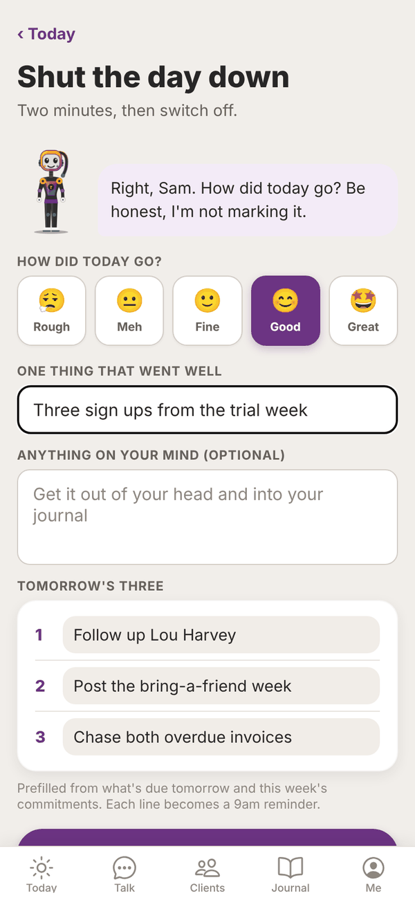
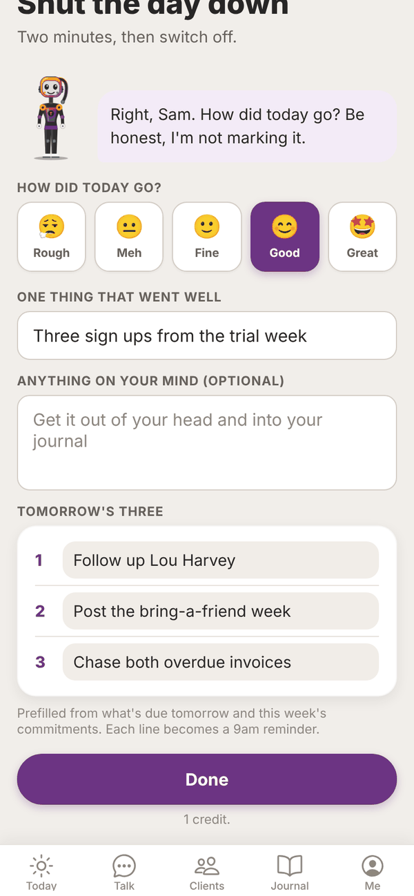
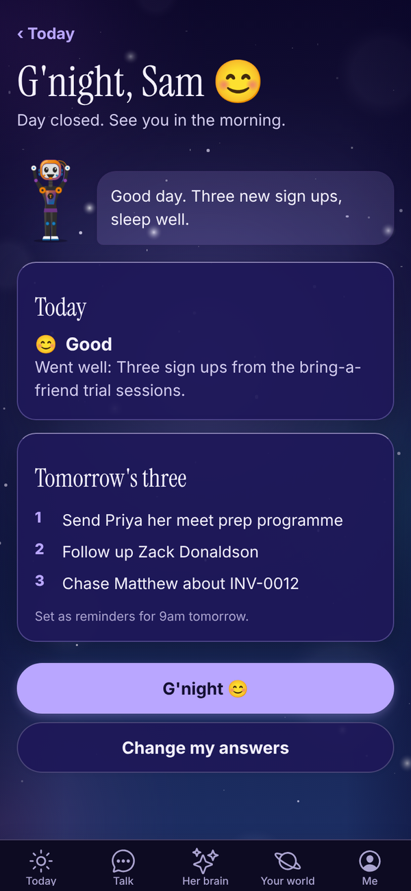
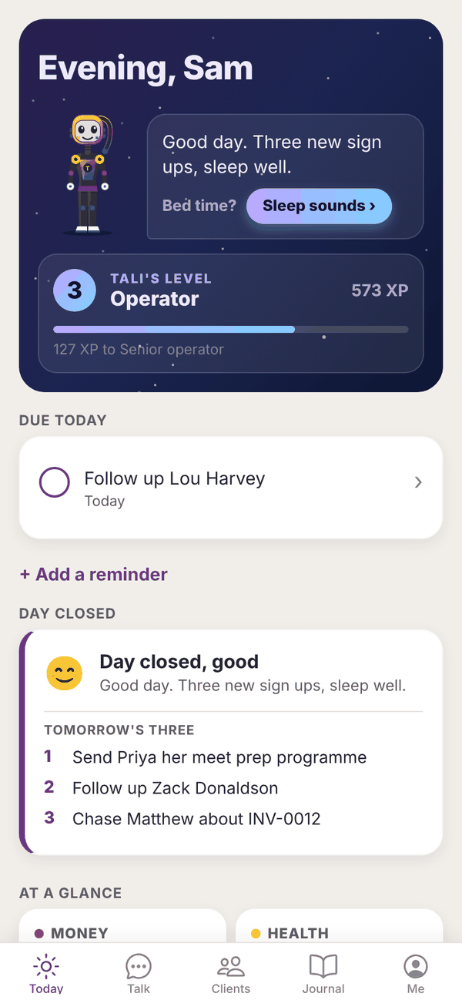

Tali HQ guide
Shut the day down and night mode
Close the day in two minutes, set tomorrow's three, then let Today switch to night mode.
The shutdown is two minutes with Tali at the end of the day. You say how it went, note one thing that went well, get anything on your mind out of your head, and set tomorrow's three. Tali signs off with one line, the day is closed, and Today goes into night mode. Free
When it shows up#
From two hours before your shutdown time, a Tonight card appears on Today with Shut the day down and a Start button. Your shutdown time is 9pm unless you change it.

If Nudge me to shut down is on in Settings, Tali also sends one notification at your shutdown time if the day isn't closed yet.
You can start a shutdown any time from Me, Tali's jobs, Shut the day down.
Do your shutdown#


- Tap Start on the Tonight card (or open it from Me).
- Under How did today go?, tap one: Rough, Meh, Fine, Good or Great. You have to pick one.
- In One thing that went well, write something. Even a small one counts.
- Anything on your mind (optional): get it out of your head.
- Check Tomorrow's three. Tali fills these in from what's due tomorrow and this week's commitments. Change any line, or clear it. Line 1 is the one thing that matters most; 2 and 3 are optional.
- Tap Done.
Tali then:
- saves your answers, and puts "what went well" and your note into your journal as an entry called Shutdown (skipped if both are empty)
- turns each of tomorrow's three into a reminder at 9am tomorrow (lines that already match an open reminder are skipped)
- writes you one short sign off line
The shutdown uses 1 credit on the trial and paid plans. On Free it counts as one of your 250 messages.
After you're done#

The screen says G'night with Tali's line, how today went and tomorrow's three. Tap G'night to go back to Today.
Changed your mind? Tap Change my answers, edit anything, and tap Done again. That uses another credit (or message on Free). Tap Keep what I had to leave it as it was.
Night mode#
Once the day is closed, the top card on Today turns into a night sky. Tali shows her sign off line, asks Bed time? and the brief button is swapped for Sleep sounds. A Day closed card shows your mood and tomorrow's three.

Tap Sleep sounds to open Sleep. See Sleep sounds and wind down. Night mode lasts until the next day.
Change your shutdown time#
- Open Me, then Settings.
- Under Shut the day down, pick a time from 5:00pm to 10:00pm.
- Turn Nudge me to shut down on or off.
- Tap Save.
Questions#
Is the shutdown on the Free plan?
Yes. On Free it counts as one of your 250 messages a month.
Where do tomorrow's three go?
They become reminders at 9am tomorrow and show under Due today in the morning.
Can I do the shutdown early, say at 4pm?
Yes. Open Me, Tali's jobs, Shut the day down any time. The Tonight card on Today just shows up from two hours before your shutdown time.
I closed the day by mistake. Can I undo it?
You can't reopen it, but you can tap Change my answers on the shutdown screen and save different answers. Night mode stays on for the rest of the day.
Does Tali see what I write in "Anything on your mind"?
Yes. It goes into your journal as a normal entry, which Tali can read and learn from. To hide it from her, open the Shutdown entry in your Journal and turn on Keep this from Tali.